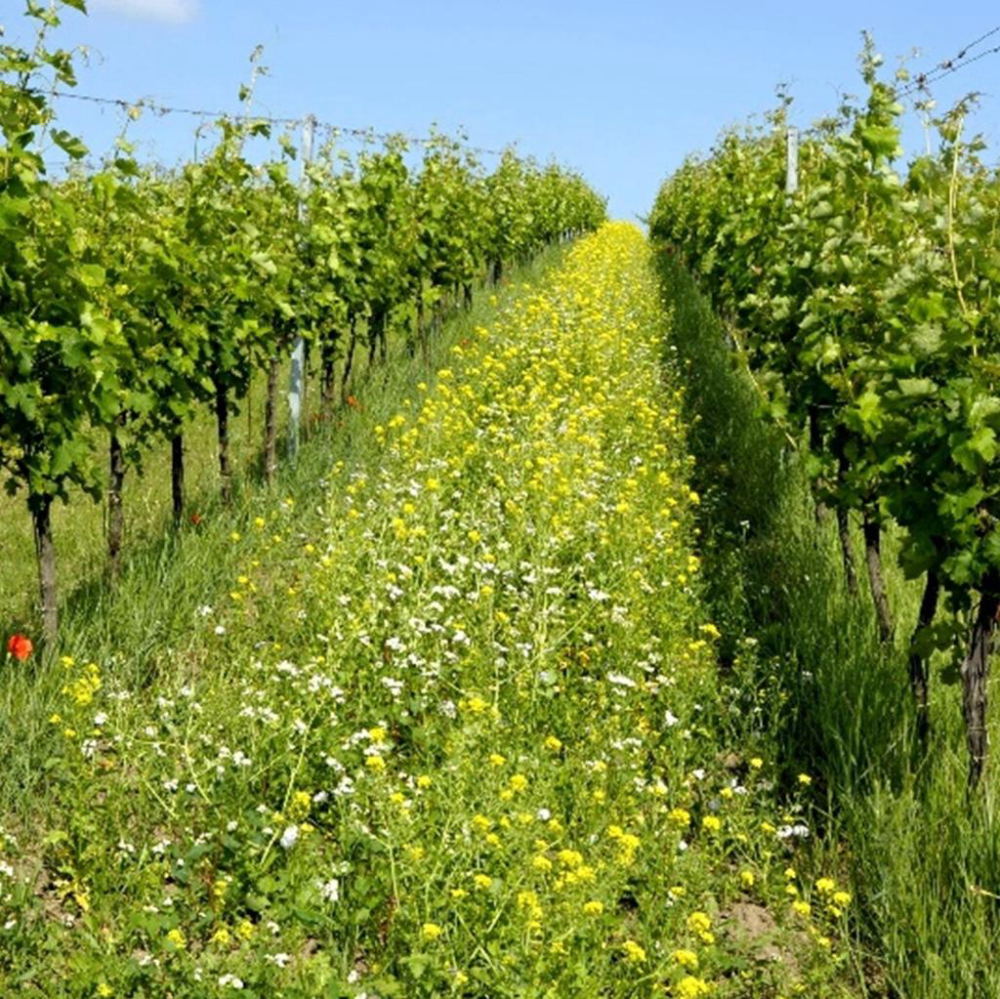
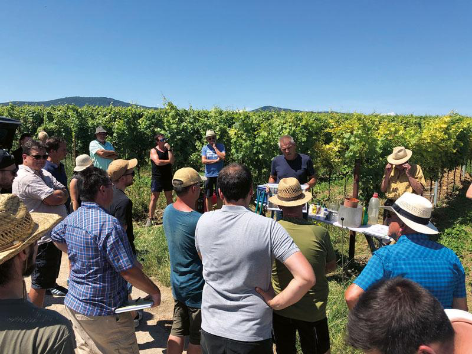
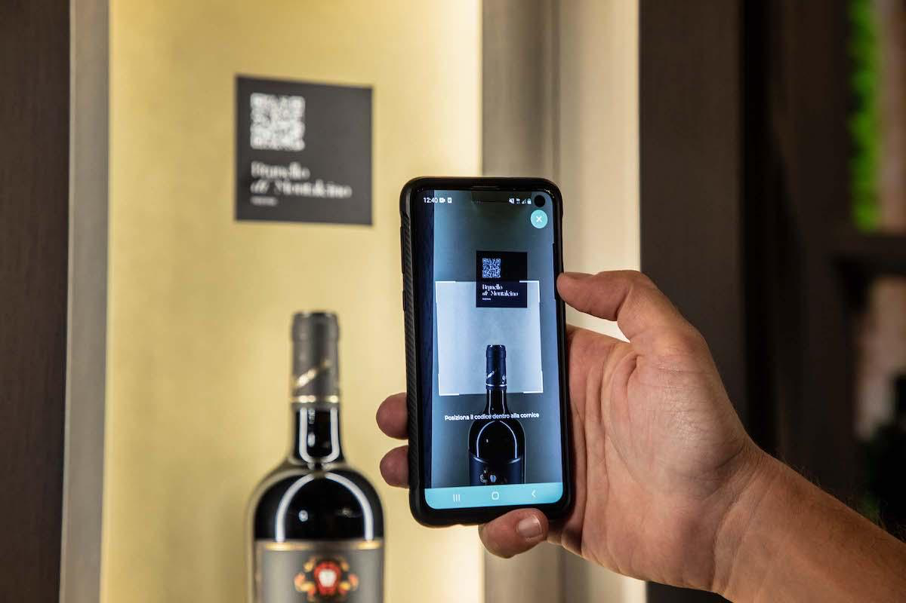

Al termine dell'analisi del Bilancio di Sostenibilità del Gruppo Caviro, vengono presentate tre proposte di miglioramento elaborate sulla base dei dati e delle evidenze emerse durante lo studio. Le proposte mirano a rafforzare il percorso di sostenibilità del Gruppo, intervenendo su aspetti ambientali, sociali e di governance, in coerenza con il suo modello cooperativo.
Proposta 1: Tutela e Valorizzazione della Biodiversità Agroecosistemica
Premessa
Nel corso degli anni, il Gruppo Caviro ha sviluppato un modello di sostenibilità fortemente orientato all'economia circolare, sintetizzato nel principio “dalla vigna alla vigna”. Tale approccio consente di valorizzare i sottoprodotti della vinificazione attraverso la produzione di energia da fonti rinnovabili, biometano e ammendanti compostati, favorendo la chiusura del ciclo produttivo e la restituzione di sostanza organica al suolo.
Parallelamente, il Gruppo ha incrementato gli investimenti nell'innovazione applicata al settore agricolo. Un esempio è rappresentato dalla realizzazione a Forlì di un impianto agrivoltaico integrato su vigneto, sviluppato in collaborazione con centri di ricerca specializzati e concepito anche come spazio di sperimentazione per nuove soluzioni in ambito agronomico.
Nei Bilanci di Sostenibilità analizzati, il Gruppo attribuisce particolare rilevanza alla tutela dell'ambiente e della biodiversità. Tuttavia, nella documentazione presa in esame, gli interventi specificamente dedicati alla biodiversità dei vigneti risultano meno approfonditi rispetto ad altri ambiti della strategia ambientale, come l'economia circolare, la gestione delle risorse e la produzione di energia da fonti rinnovabili.
A partire da queste considerazioni, la proposta intende ampliare l'attuale strategia di sostenibilità attraverso interventi specificamente rivolti alla tutela e alla valorizzazione della biodiversità agroecosistemica. L'obiettivo è tradurre questo principio in pratiche concrete e misurabili direttamente nei vigneti. Tale impostazione trova riscontro anche nella letteratura consultata, che evidenzia il ruolo della diversità biologica e varietale nel mantenimento dell'equilibrio degli agroecosistemi e nella tutela del patrimonio agricolo.

Obiettivo
Integrare l'attuale modello di economia circolare adottato da Caviro con interventi finalizzati all'arricchimento ecologico dei vigneti, attraverso l'introduzione di pratiche agronomiche concrete e di strumenti per il monitoraggio della biodiversità.
Linee di Intervento
- Fasce fiorite interfilari: introduzione di inerbimenti controllati tra i filari mediante miscugli di specie erbacee autoctone, con l'obiettivo di contribuire alla protezione del suolo e creare habitat favorevoli all'entomofauna utile.
- Siepi e aree verdi perimetrali: realizzazione e mantenimento di fasce arboree e arbustive diversificate lungo i margini dei vigneti, al fine di favorire la creazione di corridoi ecologici e una maggiore connettività del paesaggio agricolo.
- Specie nettarifere: introduzione di specie vegetali nettarifere nelle aree marginali dei vigneti, allo scopo di fornire risorse alimentari e habitat agli insetti impollinatori.
- Pratiche agronomiche a basso impatto ambientale: progressiva adozione di tecniche conservative e di strategie orientate alla riduzione degli input chimici, affiancate, ove applicabili, da strumenti di controllo biologico e da una maggiore diversificazione della gestione agronomica.
- Collaborazioni scientifiche: estensione dell'esperienza di collaborazione con enti di ricerca allo sviluppo di un protocollo per il monitoraggio della biodiversità nei vigneti, considerando indicatori relativi, ad esempio, alla flora, agli insetti impollinatori e alla qualità del suolo.
Risultati Attesi
L'introduzione di queste misure permetterebbe di rafforzare l'integrazione tra gli obiettivi di sostenibilità dichiarati dal Gruppo e le pratiche applicate direttamente nei vigneti. Gli interventi potrebbero contribuire alla tutela degli habitat agricoli, al miglioramento della qualità ecologica del territorio e a una maggiore capacità di monitorare nel tempo gli effetti delle strategie adottate.
La proposta consentirebbe inoltre di ampliare l'attuale modello di economia circolare, affiancando alla valorizzazione dei sottoprodotti una maggiore attenzione alla biodiversità degli agroecosistemi. La disponibilità di risultati misurabili potrebbe infine rafforzare la trasparenza della rendicontazione ambientale e fornire ulteriori elementi di valore nel rapporto con soci, stakeholder e territorio.
Proposta 2: Rafforzamento della Formazione Tecnica per i Soci Viticoltori
Premessa
Il settore vitivinicolo italiano si trova ad affrontare una crescente instabilità climatica, caratterizzata da anomalie climatiche, eventi estremi e variazioni dei cicli fenologici della vite. Questa situazione richiede ai viticoltori una crescente capacità di adattamento e l'acquisizione di competenze adeguate per rispondere ai cambiamenti in atto. In tale contesto, l'aggiornamento delle conoscenze agronomiche non rappresenta soltanto un fattore legato alla qualità della produzione, ma assume un ruolo rilevante anche per la sostenibilità produttiva ed economica della filiera nel medio e lungo periodo.
Nel proprio Bilancio di Sostenibilità, Caviro attribuisce particolare importanza alla formazione e allo sviluppo delle competenze professionali lungo la filiera. Il Gruppo valorizza inoltre il ruolo dei soci viticoltori anche attraverso iniziative di comunicazione dedicate alla loro attività e al contributo fornito alla produzione. Dalla documentazione analizzata, tuttavia, risultano meno approfonditi eventuali programmi strutturati e continuativi di formazione tecnica specificamente rivolti ai soci viticoltori e dedicati, in particolare, alla gestione dei rischi climatici e all'aggiornamento delle pratiche agronomiche.
Considerando l'ampiezza e la distribuzione territoriale della base sociale di Caviro, un investimento sistematico nella formazione tecnica potrebbe rappresentare un ulteriore sviluppo del modello cooperativo. L'intervento sarebbe finalizzato a rafforzare la capacità della filiera di adattarsi ai cambiamenti climatici, favorire il mantenimento della qualità delle uve conferite e facilitare l'adozione di nuove pratiche agronomiche, tecnologie e disposizioni normative.

Obiettivo
Sviluppare un sistema continuativo di formazione tecnica rivolto ai soci viticoltori, affiancando alle attuali attività del Gruppo strumenti specifici per favorire l'aggiornamento professionale, lo scambio di competenze e la diffusione di buone pratiche tra le cantine associate.
Linee di Intervento
- Corsi annuali di aggiornamento: definizione di un calendario formativo strutturato dedicato a tematiche agronomiche, normative e di sostenibilità, comprendendo, ad esempio, gestione del suolo, difesa fitosanitaria, innovazioni varietali e certificazioni.
- Webinar e piattaforme digitali: realizzazione di una piattaforma e-learning dedicata, attraverso la quale i soci possano accedere a contenuti formativi anche a distanza, riducendo le difficoltà derivanti dalla loro distribuzione sul territorio.
- Giornate dimostrative nei vigneti: organizzazione di incontri e attività pratiche presso vigneti pilota delle cantine associate, finalizzati a mostrare direttamente sul campo l'applicazione delle tecniche trattate durante le attività formative, come la gestione del suolo e l'impiego di nuove tecnologie.
- Scambio di buone pratiche: creazione di un sistema strutturato per favorire la condivisione di esperienze, conoscenze e soluzioni applicate con successo tra le diverse cantine associate al Gruppo.
- Collaborazione con università e istituti agrari: sviluppo di collaborazioni con università, istituti agrari ed enti di ricerca per la progettazione e l'aggiornamento dei contenuti formativi sulla base delle più recenti conoscenze scientifiche. Tali collaborazioni potrebbero inoltre comprendere tirocini e progetti di ricerca applicata presso le cantine associate.
Risultati Attesi
L'introduzione di un sistema formativo strutturato permetterebbe al Gruppo di rafforzare le competenze tecniche dei soci e la capacità di risposta della filiera ai cambiamenti climatici e all'evoluzione del settore vitivinicolo. La diffusione di conoscenze condivise potrebbe inoltre favorire una maggiore uniformità nell'applicazione delle pratiche agronomiche e facilitare l'adozione di tecniche orientate alla sostenibilità.
La proposta presenta inoltre un collegamento diretto con gli interventi individuati nella prima proposta, poiché la formazione potrebbe costituire uno degli strumenti attraverso cui diffondere tra i soci le pratiche dedicate alla tutela della biodiversità agroecosistemica. In questo modo, formazione tecnica e sostenibilità ambientale verrebbero integrate all'interno di un percorso comune, rafforzando al tempo stesso la collaborazione e lo scambio di competenze tra le diverse realtà della base sociale.
Proposta 3: Potenziamento della Tracciabilità Digitale e della Trasparenza della Filiera Vitivinicola
Premessa
Il Gruppo Caviro dispone già di strumenti digitali per la gestione interna della tracciabilità della filiera, tra cui la suite gestionale “i-wine”, sviluppata da Apra. La piattaforma consente di gestire le attività di cantina, produrre le informazioni necessarie alla tracciabilità dei prodotti e garantire la conformità ai registri telematici SIAN previsti dalla normativa vigente. Tale infrastruttura risulta tuttavia principalmente orientata alla gestione dei processi interni e agli adempimenti normativi.
In un mercato caratterizzato da una crescente attenzione verso l'origine, la sostenibilità e le caratteristiche dei prodotti, la tracciabilità può assumere una funzione che supera il solo adempimento normativo, diventando anche uno strumento di informazione e trasparenza nei confronti del consumatore. Il Regolamento (UE) 2021/2117, applicabile alle nuove disposizioni in materia di etichettatura dei vini a partire da dicembre 2023, ha introdotto nuovi obblighi informativi relativi, tra gli altri aspetti, agli ingredienti e alla dichiarazione nutrizionale, prevedendo la possibilità di fornire determinate informazioni anche attraverso strumenti elettronici.
La proposta intende quindi sviluppare ulteriormente il sistema di tracciabilità di Caviro, estendendo parte del patrimonio informativo già disponibile internamente verso l'esterno. L'obiettivo è favorire una maggiore trasparenza della filiera e rendere più accessibili al consumatore le informazioni relative all'origine e alla sostenibilità dei prodotti.

Obiettivo
Ampliare la funzione della tracciabilità, affiancando agli strumenti di conformità e gestione interna un sistema di comunicazione rivolto al consumatore finale, attraverso il quale rendere accessibili e comprensibili informazioni relative all'origine, alla sostenibilità e all'identità territoriale dei vini del Gruppo.
Linee di Intervento
- QR Code sulle Bottiglie: Caviro utilizza già sistemi di etichettatura digitale accessibili tramite QR Code per fornire alcune delle informazioni previste dalla normativa. La proposta consiste nell'ampliare la funzione di questo strumento, consentendo al consumatore di accedere, ove disponibili, anche a informazioni relative alla provenienza geografica delle uve, alla cantina conferente, alle pratiche agronomiche adottate e a specifici indicatori di sostenibilità associati al prodotto o alla filiera.
- Piattaforma digitale della filiera: sviluppo di un portale pubblico in grado di rappresentare in maniera chiara il percorso che conduce dall'uva al prodotto finale, evidenziando le diverse fasi della filiera e le caratteristiche del modello cooperativo di Caviro. A differenza dei sistemi gestionali destinati all'utilizzo interno, la piattaforma sarebbe progettata specificamente per consumatori e stakeholder esterni.
- Valorizzazione dell'identità territoriale: utilizzo degli strumenti digitali per presentare la provenienza geografica delle uve e le caratteristiche dei territori rappresentati dalle cantine associate, valorizzando la diversità territoriale della base produttiva del Gruppo.
- Comunicazione degli indicatori ESG: integrazione nella piattaforma digitale di una selezione di indicatori ambientali, sociali e di governance già presenti nel Bilancio di Sostenibilità, presentati in una forma sintetica e comprensibile anche per un pubblico non specializzato.
- Coinvolgimento del consumatore: introduzione di strumenti di interazione, come questionari, sistemi di feedback e contenuti informativi dedicati alla viticoltura e al modello cooperativo, con l'obiettivo di trasformare il QR Code da semplice strumento di consultazione a possibile canale di comunicazione tra il Gruppo e il consumatore.
Risultati Attesi
L'attuazione della proposta permetterebbe a Caviro di valorizzare maggiormente il patrimonio informativo già disponibile all'interno della propria filiera, rendendone una parte accessibile anche ai consumatori e agli stakeholder esterni. Una maggiore disponibilità di informazioni potrebbe contribuire a rafforzare la trasparenza relativa all'origine e alle caratteristiche dei prodotti e a rendere più comprensibili gli impegni di sostenibilità assunti dal Gruppo.
L'integrazione tra tracciabilità, informazioni ESG e identità territoriale potrebbe inoltre rappresentare uno strumento di differenziazione dell'offerta e contribuire a rafforzare il rapporto tra il modello cooperativo di Caviro e il consumatore finale. La proposta consentirebbe quindi di collegare maggiormente i sistemi digitali utilizzati per la gestione della filiera con le attività di comunicazione e rendicontazione della sostenibilità.